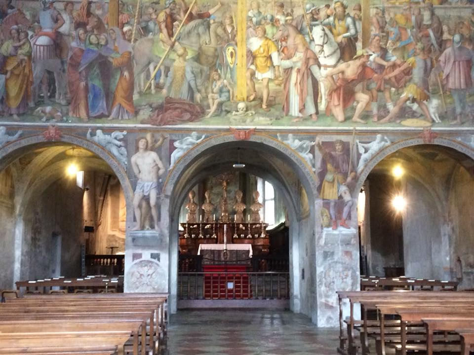
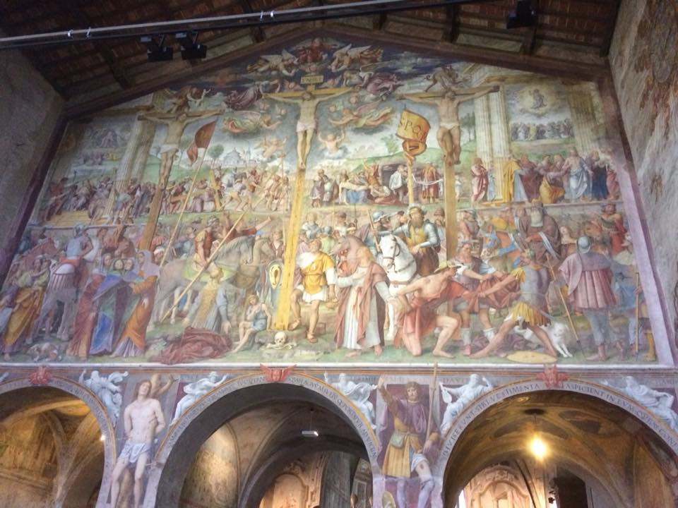
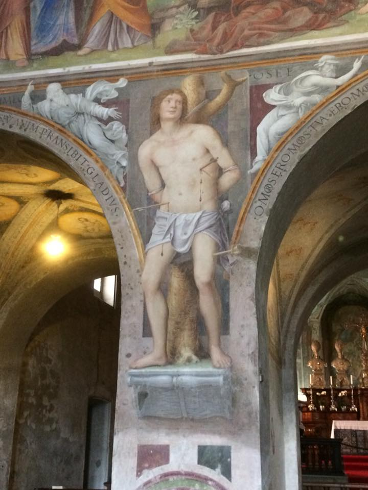
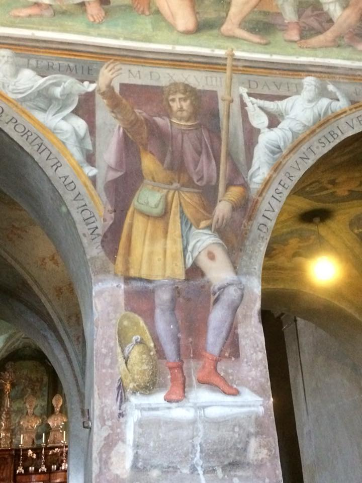
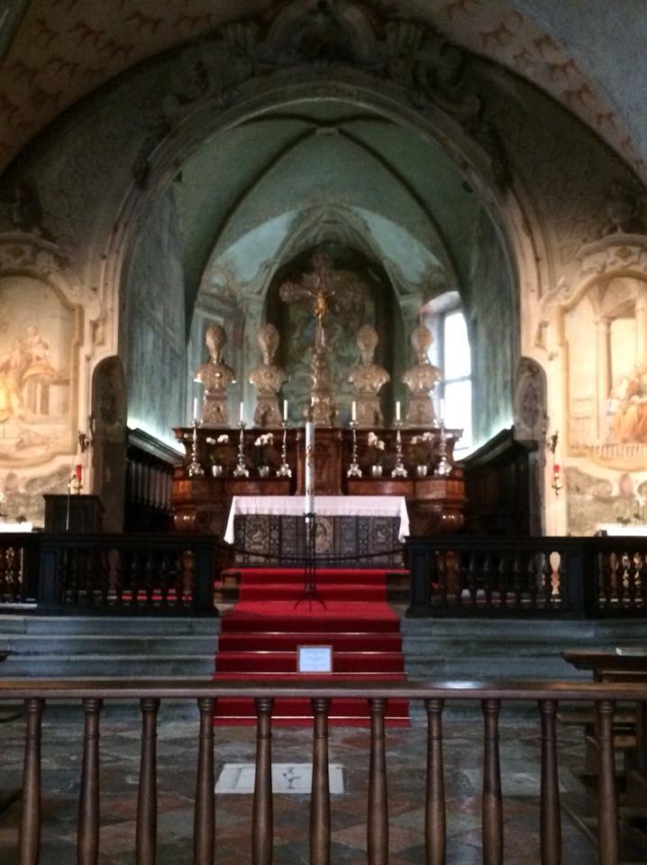
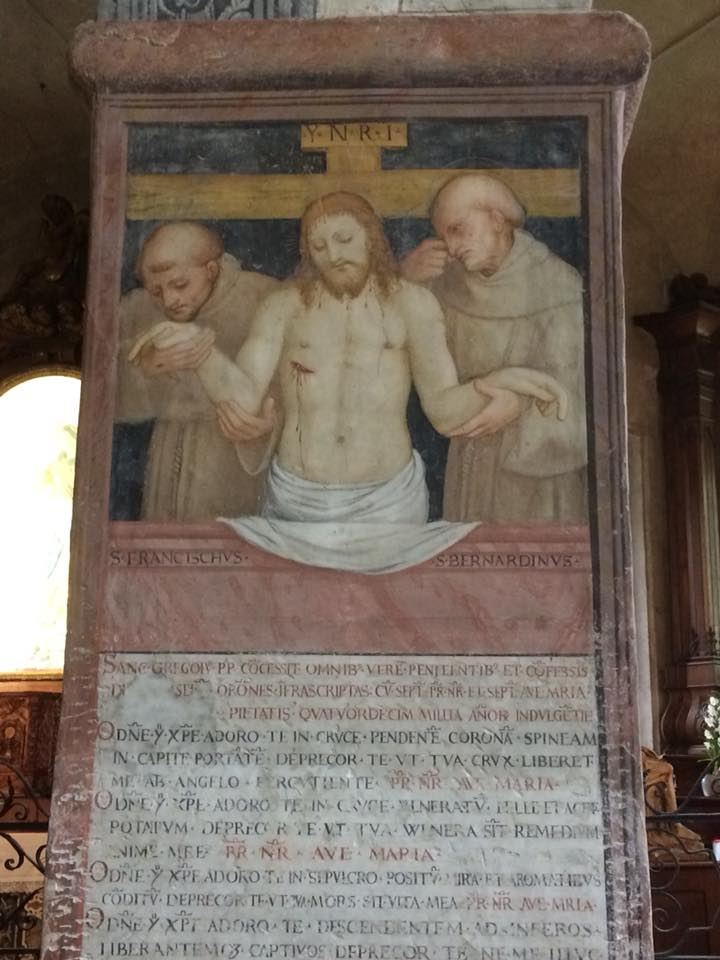

This interesting little church (Chiesa di Santa Maria degli Angeli) has some huge frescoes which, despite their Pre-Raphaelite appearance, are in fact by Bernardino Luini (1501-1532) a follower of Leonardo da Vinci and one of the most important artists of the Lombard Renaissance. In this giant fresco he tells the whole story of the Passion and also manages to include Saints Sebastian and Roch showing off their wounds and sores respectively. How charming.Aen with bacon, tasted as bland as they look. Home now for asparagus risotto!





